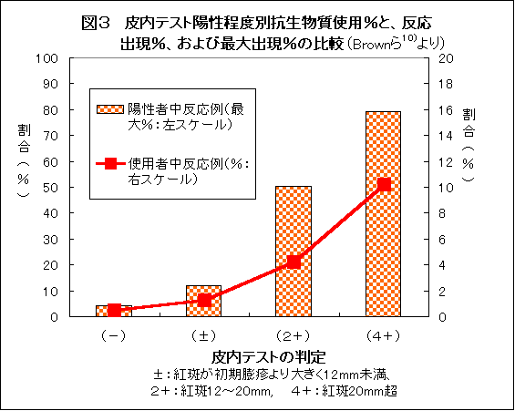
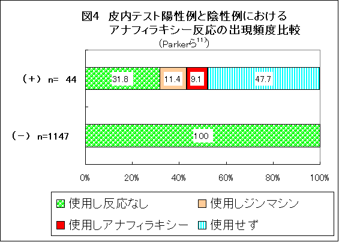

厚生労働省（厚労省）はペニシリン剤やセフェム剤など、これまで実質的に実施を義務付けていた予備皮内反応テスト（以下「皮内テスト」と略：註a）を廃止する添付文書の改訂を行った1)。これは、2002年5月2)より、日本化学療法学会が検討し厚労省に対して提言をしていた内容3,4)に沿ったものである。
医薬品・治療研究会では、抗生物質の皮内テスト5,6)や放射線造影剤の予備テスト7,8)など、アナフィラキシー(註b）防止のための予備テストの重要性について指摘してきたが、今回、ついに、アナフィラキシー死を防止するための有力な手段の一つ「皮内テスト」が廃止されてしまった。
廃止の根拠が極めて薄弱であること、皮内テストがいかに死亡事故防止に有用であるかを述べたい。
また、廃止により日本ではすでに「尾高教授事件」9)（註c）に相当する事故が起きていることを指摘するとともに、
皮内テスト陰性者には、ほとんど全員に抗生物質が使用されたが、陽性者、特に強要請者にはわずかしか使用できなかった（図１）。これは欧米（図２：Parker）でも、日本（図２：堀内ら）でも同じ。全員には、怖くてとてもできないからだ。
ショックにつながる症状が出現する頻度は、皮内テストの陽性程度が強くなるほど高い（図3）。皮内テスト陽性で抗生物質を使用しなかった人には、最大全員に症状が起きうると考えれば、頻度は最大約80％にもなりうる。
図4も同様で、皮内テスト陽性者44人中、治療目的で抗生物質が使用された23人中4人（17％=6人に1人）にショックが生じた。図4には、これが44人中の9。1％に相当することが表示されている。最大では9＋48％=57％にショックが起きる可能性があるので、皮内テスト陽性者に抗生物質を使うと、17％〜最大50％程度がショックとなるということを示している。
日本でも、堀内12)らが同じような実験をしたが、アレルギー歴のない2209人に皮内テストを実施し、陽性者55人（2.5％）のうち4人にしか抗生物質を使用しなかった。そして4人のうち1人にショックに準じる重症ジンマシンが生じた。全員に実施していれば、1人や2人はショックが起きていたと予測できる。
今回の添付文書改訂前に、病院の方針として皮内テストを廃止していて、抗生物質を点滴開始後約6分で心停止するという劇症アナフィラキシーを生じて患者が死亡した例についての相談が医薬ビジランス研究所に寄せられている．尾高事件に相当する例である（機会をあらためて紹介したい）．
皮内テストが陰性でもアナフィラキシーを起こす人はあるが、その場合には、 激しい症状になることは極めて稀であり、もう少しゆっくりした経過となる．早期に気付き、アドレナリンを少量皮下注射し、コルチコステロイド剤の注射をすれば軽快し、心停止に至ることは極めて少ない。
したがって、上記の例は、通常のアナフィラキシーのなかでも最も急激な経過をとった例といえる。その重大な原因の一つとして、皮内テストを実施していなかったことを挙げざるをえない。
皮内テストを実施していれば、点滴開始後6分で心停止するほどの超重症例は、ほぼ確実に皮内テストが陽性となり除外されるはずだからである。
これはこれまでの「エビデンス」からでも十分に推測が可能である。良識ある医療現場では、無駄な死、不幸な死を防止するために、注射後の十分な観察だけでなく、引き続き「皮内テスト」の継続をされるよう訴える。
なお、2004年10月28日発行「医薬品・医療用具等安全性情報206号」において詳細が報告された16)。厚生労働省では、日本化学療法学会等からの要望を受け、薬事・食品衛生審議会の専門委員により検討がなされ、同学会の見解に沿った安全対策をまとめた。したがって、廃止の理由も基本的に学会の見解と同様である。